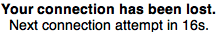

############################## # Initial test for the Node.js Mockups app # Assumes Mac OS + Google Chrome and # an /etc/hosts entry for mockups.dev ############################## import os myPath = os.path.dirname(getBundlePath()) if not myPath in sys.path: sys.path.append(myPath) import operatingsystem import browser import network import mockups #browsers = operatingsystem.getBrowsers() browsers = ['chrome-mac', 'safari-mac'] for browseros in browsers: browser.openBrowser(browseros) browser.openURL("http://mockups.dev") mockups.testProjectLoaded() # Test Socket Auto-reconnect network.disconnect() App.focus(browseros) mockups.testLostConnection() network.connect() App.focus(browseros) mockups.testReconnected() # Test Reconnect Button network.disconnect() App.focus(browseros) mockups.testLostConnection() wait(, 40) network.connect() App.focus(browseros) mockups.reconnect() mockups.testReconnected() # Test Name Change mockups.changeName("Todd") mockups.testNameChange() # Test Existing Project browser.copyURL() browser.openURL("http://mockups.dev") browser.pasteURL() mockups.testProjectExists() print("SUCCESS!")